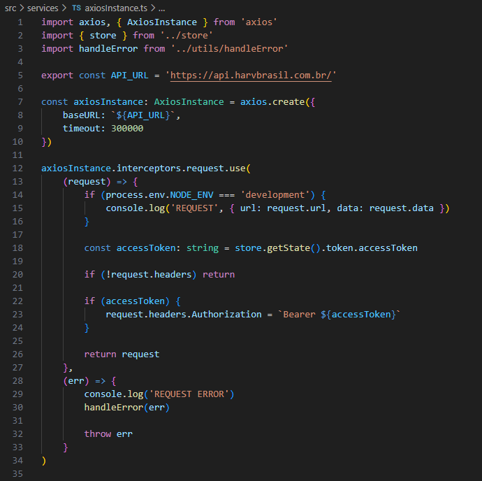
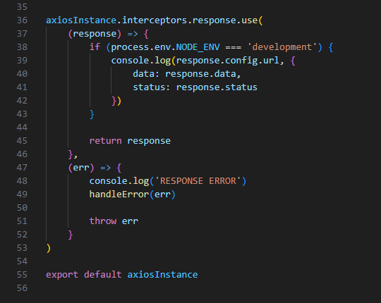

2.6- Acesso a APIs externas
O acesso a APIs externas é feito atraves da biblioteca axios, utilizando o objeto AxiosInstance, conforme o padrão mostrado no arquivo /src/services/axiosInstance.ts, exibido abaixo.

Basicamente, este arquivo cria um objeto axiosInstance, configurando o domínio e timeout para todas as requests.
Depois, é criada uma função anônima para interceptar cada request
(request) => {...}
O papel desta função é injetar em cada request as informações de autenticação no campo Authorization do Header, da respectiva request.
Existe também uma função anônima que direciona os erros de comunicação para serem tratados pela função handleError(err), definida no arquivo /src/utils/handleError.ts, a qual será explicada na seção 2.7- Tratamento de Erros.
Além disso, este arquivo define, também, duas outras funções anônimas, que são executados na chegada de uma resposta da API, mostradas abaixo.

A função que intercepta a resposta é usada para fins de depuração, quando o sistema está em ambiente de desenvolvimento.
A função de tratamento de erros trabalha de forma similar à situação de envio de request, mostrada anteriormente.